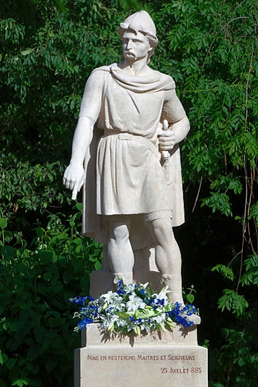

Hertig o Greve av Normandie, Vikingahövding. Blev ca 71 år.
omkring 860 Möre og Romsdal, Norge.
931 Rouen, France.
Gange-Rolv har historisk betydelse framför allt för att han har identifierats med Rollo, den första hertigen av Normandie. År 911 slöt den franske kungen Karl den enkele och vikingahövdingen Rollo ett avtal enligt vilket Rollo och hans män skulle få bosätta sig i området kring Seines mynning i utbyte mot att de bevakade landet mot andra vikingar.
DENNA ARTIKEL ÄR FRÅN BOKEN NORSK BIOGRAFISK LEKSIKON, UTGIVEN 1999–2005
Innehållet i artikeln har inte uppdaterats sedan 2005.
Se Store norske leksikon: Gange-Rolv för uppdaterad information.
Om Gange-Rolv som norsk hövding har vi inte mycket information. Han var son till Ragnvald Mørejarl och Hild, dotter till en annars okänd hövding, Rolv Nevja, efter vilken han namngavs. Sagorna förklarar hans epitet med att han var så stor att han inte kunde sitta på en häst (fornnordiska Gǫngu-Hrólfr, 'Rolv walking'). Annars sägs det att han tillbringade mycket tid ute i Viking, och att Harald Fairhair så småningom gjorde honom fredlös efter att han också hade härjat i Norge. Hans mamma sägs ha klagat på detta i en bardstrof som har bevarats.
Norsk-isländsk historieskrivning kom under medeltiden överens om att Gange-Rolv och Rollo var samma person. Det äldsta skriftliga beviset finns i latinets Historia Norvegiæ (ca 1180), som skrevs i Norge. Snorre berättar i sina kungliga sagor att Gange-Rolv erövrade Normandie efter att först ha härjat i Hebridernas område - Irländska sjön - Frankrike, och att många norrmän bosatte sig i Normandie med honom.
I slutet av 1800-talet uppstod en livlig debatt om vem Rollo var. Diskussionen, som delvis följde nationella splittringar (med danska och norska historiker på motsatta sidor), fick särskild relevans under perioden fram till Normandie stora millenniefirande 1911. En viktig punkt i debatten förutom Rollos identitet var hur man skulle förstå termer som "norrmän" och "danskar" i de medeltida källorna, och även var den "danska" eller "norska" bosättningen i Normandie hade varit.
Den danske historikern Johannes Steenstrup startade debatten. Hans huvudargument var det tydliga uttalandet från den franska historikern Dudo of St. Quentin att Rollo var dansk. Eftersom Dudo skrev sitt arbete om de normandiska hertigarna omkring 1020 verkade han vara närmare händelserna än sagaförfattarna, så hans version måste föredras. Samtidigt betonade Steenstrup, med argument som föregrep den senare sagakritiken, hur lite som egentligen kunde byggas på de fornnordiska sagorna.
Norska historiker – främst bland dem Gustav Storm, Alexander Bugge och Ebbe Hertzberg – ifrågasatte dock Dudos källvärde och påpekade hur fullständigt opålitlig hans presentation annars är i det han skriver om Rollo och Danmark, med historisk och geografisk information som inte alls stämmer. De betonade också att Rollo borde ha haft en dotter, Gerloc (Geirlaug), vars namn snabbt indikerade en norsk koppling, och att det också finns en tradition på franska grunder, i yngre skrifter än Dudos, att Rollo var norsk.
Frågan om vem Rollo var kommer aldrig att kunna besvaras definitivt. Men bland såväl norska som franska och brittiska historiker är det numera vanligt att tro att döma av källorna – och i valet mellan de två möjligheterna – är det trots allt som talar för ett norskt ursprung.
Mycket lite har överlämnats om Rollos regering i Normandie. Källor rapporterar att han döptes 912, och han dog förmodligen någon gång mellan 928 och 932. Rollos ättlingar tjänstgjorde som hertigar i Normandie fram till 1202, och hans sonson sonson Guillaume (död 1087) blev kung av England 1066 (William the Conqueror).
Den 25 september 1911 avtäcktes en staty av Rollo/Gange-Rolv i Ålesunds stadspark under en stor festival. Statyn var en gåva till staden från Rouen i Normandie. Det är en bronskopia av en original marmorstaty från 1863, som står utanför katedralen i Rouen.